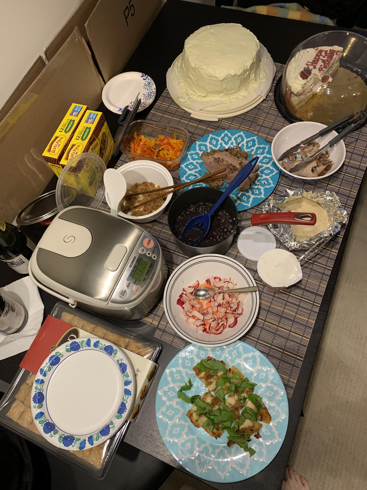
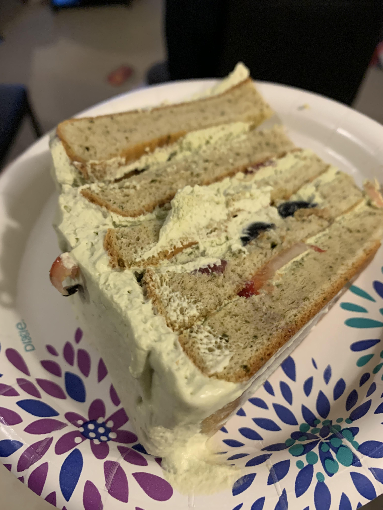

One of my coworkers had her last day at the office on the Friday before this, so I decided to invite people over for board games. To celebrate her moving onto another position, I decided to make a bunch of food as well. My menu was as follows:
This was probably one of my more ambitious projects just based on the amount of food I cooked alone. It turned out pacing the cooking was pretty easy though since the two meats just slow cooked while I prepared everything else. I baked and made the cake on the day before along with the brisket. The rest of the food I made on the day of. I think everything tasted really good, but fewer people showed than expected so I had a lot of food left over (not that that's a bad thing!).  